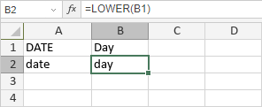

LOWER funkcija
LOWER funkcija je jedna od funkcija za tekst i podatke. Koristi se za pretvaranje velikih slova u mala u odabranoj ćeliji.
Sintaksa
LOWER(text)
LOWER funkcija ima sledeći argument:
| Argument | Opis |
|---|---|
| text | Tekst koji želite da pretvorite u mala slova. |
Napomene
Kako primeniti LOWER funkciju.
Primeri
Slika ispod prikazuje rezultat koji vraća LOWER funkcija.
